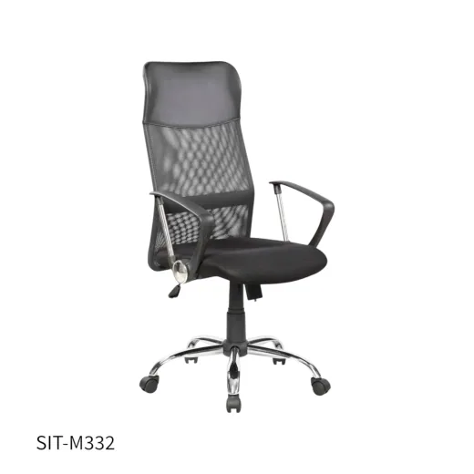
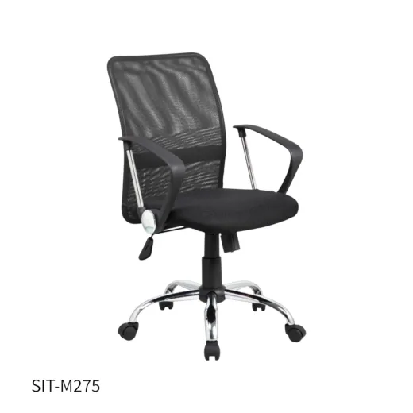
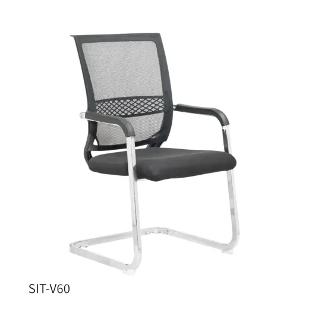

SIT · Modelo SITM390
Silla SIT Ejecutiva, cuero sintético, asiento acolchonado. Color Negro. Peso: 250Lbs. SIT-M390
L 1,904.4
En iOffice
Precio en cada tienda
| Tienda | Precio | Antes | Disponibilidad | |
|---|---|---|---|---|
| iOffice | L 1,904.4 | — | Disponible | Ver en tienda › |
Precios referenciales tomados de cada tienda el 21 de noviembre de 2026. El precio válido es el que muestra la tienda al comprar.
Descripción
Presentamos la silla ejecutiva en color negro, diseñada para ofrecerte el máximo confort y elegancia en tu espacio de trabajo. Fabricada con cuero sintético de alta calidad y un asiento acolchonado, esta silla está pensada para quienes pasan largas horas en su escritorio.
Soporta hasta 250 libras, garantizando durabilidad y estabilidad. La base cromada añade un toque de sofisticación, haciéndola perfecta para cualquier oficina moderna.
Otros sillas y escritorios SIT
 Silla SIT de Espera y Recepción, respaldo de malla, soporte lumbar. Peso: 220Lbs. SIT-V60 RojoL 1,955En iOffice
Silla SIT de Espera y Recepción, respaldo de malla, soporte lumbar. Peso: 220Lbs. SIT-V60 RojoL 1,955En iOffice Silla SIT de Espera y Recepción, respaldo de malla, soporte lumbar. Peso: 220Lbs. SIT-V60 AzulL 1,806.49En iOffice
Silla SIT de Espera y Recepción, respaldo de malla, soporte lumbar. Peso: 220Lbs. SIT-V60 AzulL 1,806.49En iOffice
Silla SIT Ejecutiva, tejido plástico de Malla con Reposabrazos cromado, Color Negro. Peso: 250Lbs. SIT-M332L 1,783.65En iOffice
Silla SIT Ejecutiva, base cromada, apoyo acolchonado. Color Negro. Peso: 200Lbs. SIT-M275L 1,689.37En iOffice
Silla SIT de Espera y Recepción, respaldo de malla, soporte lumbar. Peso: 220Lbs. SIT-V60 NegroL 1,666.45En iOffice Silla SIT Ejecutiva, tejido de malla negro y azul, Base Cromada, Color Negro y Azul. Peso: 200Lbs. SIT-M180 AzulL 2,242.82En iOffice
Silla SIT Ejecutiva, tejido de malla negro y azul, Base Cromada, Color Negro y Azul. Peso: 200Lbs. SIT-M180 AzulL 2,242.82En iOffice Silla SIT Ejecutiva SIT, Tela de Malla, Base de PVC Color Blanco. Peso: 190Lbs. SIT-M230 NegroL 1,558.27En iOffice
Silla SIT Ejecutiva SIT, Tela de Malla, Base de PVC Color Blanco. Peso: 190Lbs. SIT-M230 NegroL 1,558.27En iOffice Silla SIT Ejecutiva, base cromada, Color Negro y Azul. Peso: 200Lbs. SIT-M310 NegroL 2,486.71En iOffice
Silla SIT Ejecutiva, base cromada, Color Negro y Azul. Peso: 200Lbs. SIT-M310 NegroL 2,486.71En iOffice